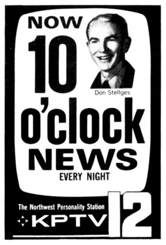
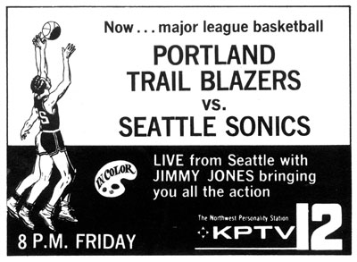
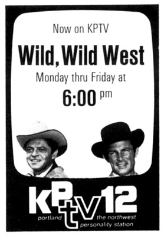
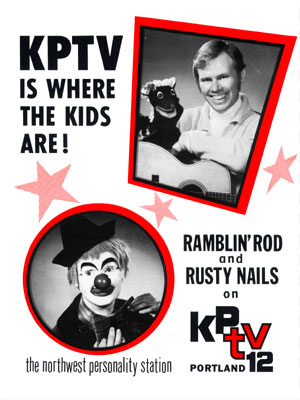

KPTV Ad Museum/1970-1979
A look back at print advertising from newspapers,
magazines, flyers, posters and TV Guide.
|  |
TV Guide, September 21, 1970
KPTV started producing a nightly 10:00pm newscast in 1970, establishing
Portland's first nightly prime-time newscast. Veteran KPTV newsman Don Stellges
anchored the show, which was KPTV's biggest news effort since becoming an
independent in 1964. |
|  |
TV Guide, October 23, 1970
1970 was the first year for Portland's new basketball franchise, and
KPTV was the first local station to carry a schedule of games. Versatile Jimmy
Jones became the television counterpart to radio's Bill Schonley, a post he held
for the many years the games aired on Channel 12, including the championship
year, 1977. |
|  |
TV Guide, September 21, 1972
Off-network syndicated programs (shows that had aired on ABC, CBS or
NBC) became big business in the 1970s, as more-and-more independent stations
went on-the-air, and needed programs to fill time. "The WIld, WIld
West" had been a big hit on CBS, so the reruns were a natural for KPTV's
early evening, kid-friendly line-up. |
|  |
KPTV Sales Ad, 1972
Another in a series of ads for KPTV's immensely popular cartoon
shows and their hosts. Rusty Nails would last only another season before
his daily show was cancelled, but Ramblin' Rod would continue entertaining
kids for another quarter century. |
ON
TO THE 1980s...
  
This page last updated on
August 17, 2025 |